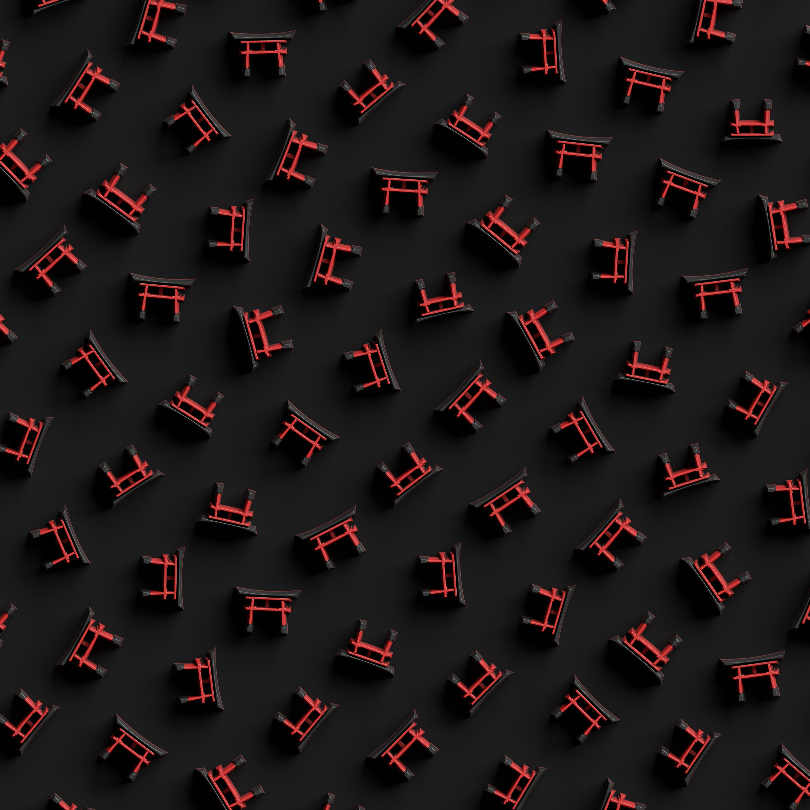
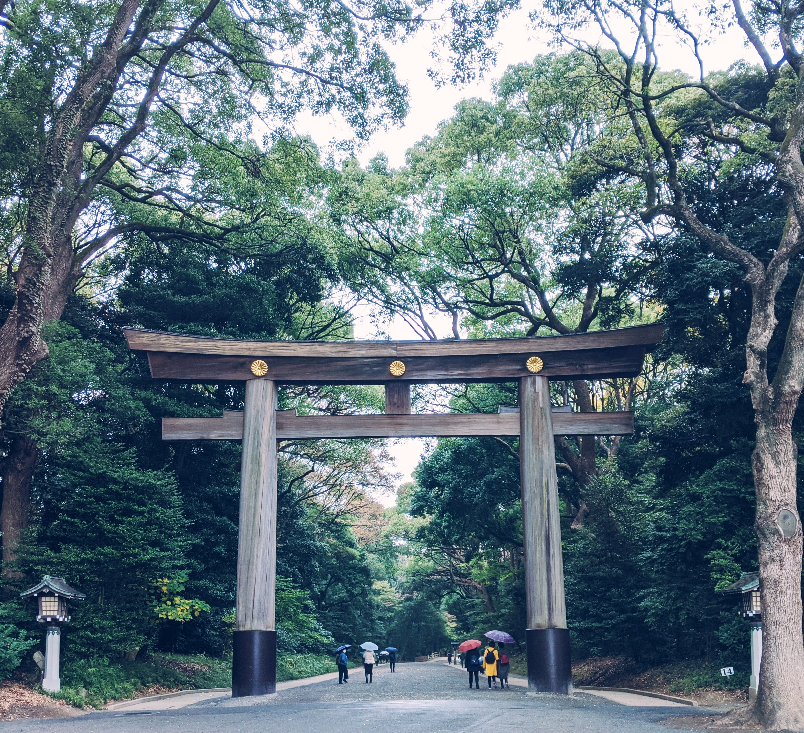
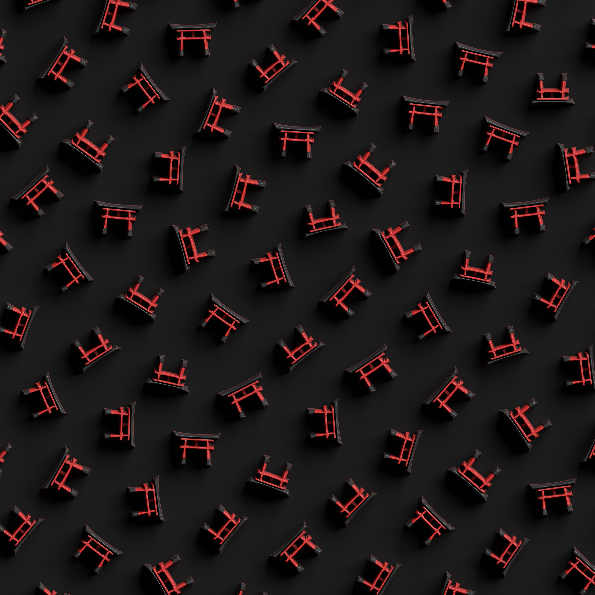
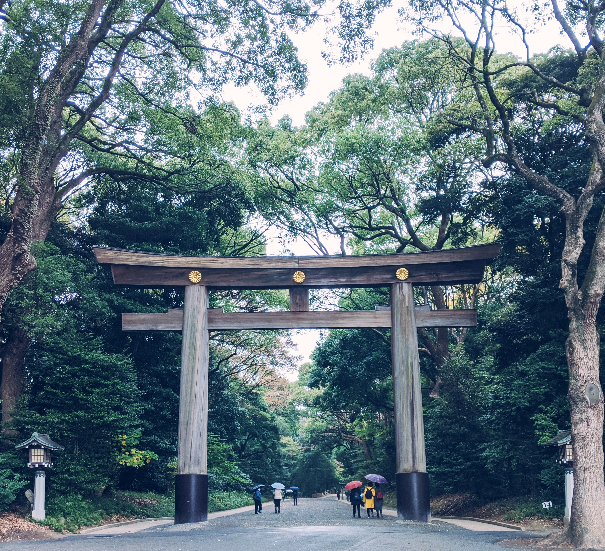

Welcome to Japan!
This website showcases some of Japan's beautiful Torii gates, and users can also upload their own discoveries!
Welcome to Japan!
This website showcases some of Japan's beautiful Torii gates, and users can also upload their own discoveries!

Torii Gates Showcase
 



Beautiful Torii maze!
A beautiful shot of a Torii gate under the rain.
A modern shot of Torii gates in bird eye view.
A gorgeous shot of a Torii gate in daylight, within the trees.
Fall down seven times, stand up eight. Keep trying until you succeed!
We are waiting for you!Join us today and post your own unique Torii pictures!